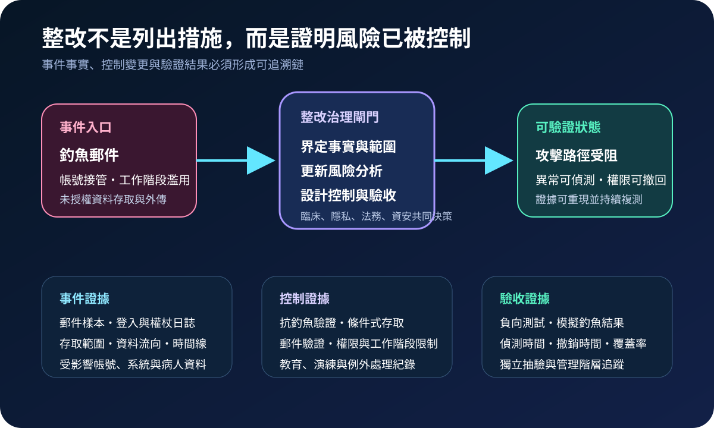
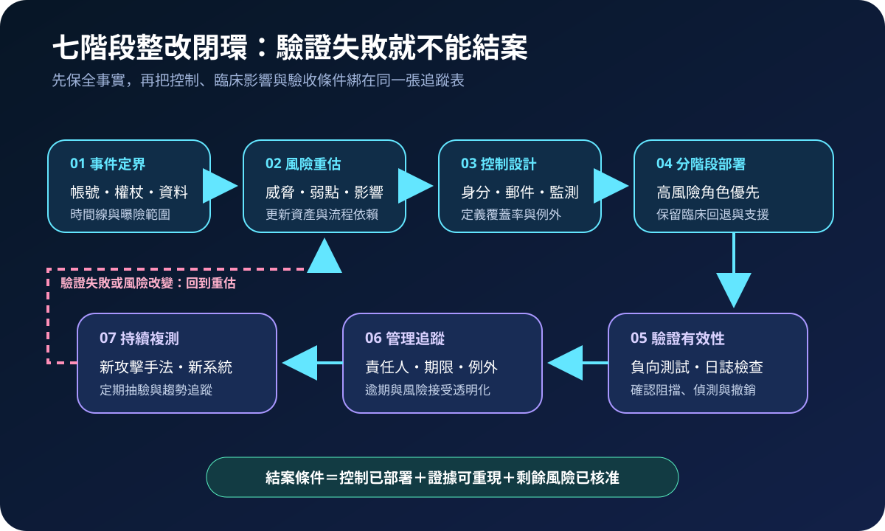
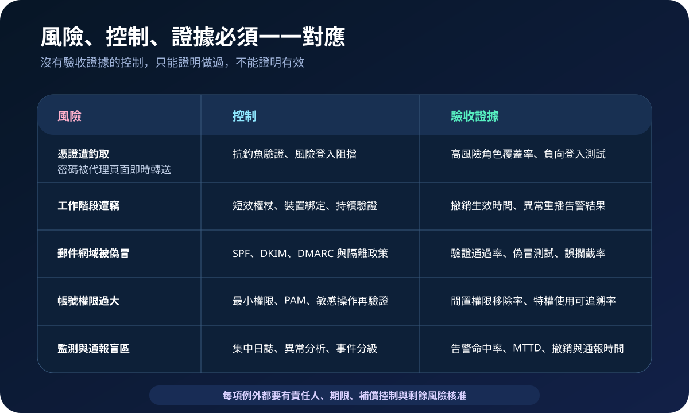

醫療資安國際觀察 · 2026-09-30
醫療釣魚事件後如何證明整改有效：從風險重估到持續複測
作者：Dr. William｜醫療資訊與資安治理實務工作者
釣魚事件處理不能停在重設密碼與完成教育訓練。醫療機構需重新界定攻擊路徑、資料曝險與臨床影響，把控制變更連到可重現的驗收證據，才能確認同類風險已降低。
名詞解釋：整改計畫要能證明控制有效
Corrective Action Plan 是針對已識別缺口設定責任、期限、措施與監督方式的整改安排；Risk Analysis 用於辨識資產、威脅、弱點、可能性與影響；Phishing-resistant authentication 則以加密驗證及網站綁定等機制，降低憑證被代理或重播的風險。三者需形成事件事實、控制部署與驗證結果的閉環。
國際現況與適用邊界
美國 HHS OCR 於 2026 年 9 月 17 日公布與 Ambry Genetics 的 HIPAA 和解，案件源自釣魚郵件造成員工郵件帳號遭入侵，225,370 人的受保護健康資訊可能遭外傳。和解除金為 700,000 美元，並要求風險分析、風險管理、政策程序及人員訓練等整改安排，由 OCR 監督兩年。該案件屬美國 HIPAA 執法，不是台灣醫療機構的法定罰則或通報標準。
NIST SP 800-63B-4 於 2025 年 7 月發布，將驗證器保證、抗釣魚特性、工作階段與生命週期管理納入數位身分技術要求。該文件可支援身分控制設計與測試，但實際導入仍需配合院內臨床流程、既有身分平台、緊急存取與台灣適用規範。
對台灣醫療機構的適用方式：可把國際案件轉化為院內整改驗收框架，重點放在完整風險分析、攻擊路徑阻斷、控制覆蓋、臨床可用性與持續證據；不得把美國和解條件直接視為台灣法定義務。
規劃：先定義結案必須回答的問題
範圍應涵蓋郵件、身分平台、遠端存取、雲端服務、特權帳號、委外人員與可存取病人資料的應用。責任可由事件指揮、資訊、資安、隱私、法務、人資與臨床單位共同承擔。驗收指標可包含抗釣魚驗證覆蓋率、異常登入偵測時間、權杖撤銷時間、特權帳號盤點完成率、模擬釣魚回報率、日誌覆蓋率及整改逾期數。

實作：七階段建立可驗證整改閉環
- 保全與定界：保存郵件、登入、權杖、端點與資料存取日誌，確認受影響帳號、系統、資料及時間線。
- 風險重估：更新資產、信任關係、工作階段、委外存取與臨床依賴，不只重述原事件。
- 控制設計：依風險配置抗釣魚驗證、條件式存取、郵件驗證、最小權限、PAM 與集中監測。
- 分階段部署：優先處理高權限與高資料影響角色，保留緊急存取、臨床支援與回退程序。
- 有效性驗證：以負向登入、權杖撤銷、偽冒郵件、異常存取與日誌告警情境測試阻擋和偵測。
- 管理追蹤：每項缺口指定責任人、期限、例外、補償控制與剩餘風險核准。
- 持續複測：系統、供應商、攻擊手法或身分流程變更後重新測試，避免一次驗收永久有效。
風險：只換密碼，工作階段與信任關係仍可能有效
常見失敗包括只重設密碼但未撤銷權杖、只做教育卻未改善技術控制、風險分析漏掉雲端與委外帳號、強制驗證造成臨床中斷、日誌保留不足，以及整改完成後沒有獨立抽驗。控制設計需同時處理身分、郵件、工作階段、權限、監測與臨床降級。

可執行清單
- 是否保存足以重建郵件、登入、工作階段、資料存取與外傳時間線的證據？
- 風險分析是否涵蓋雲端、委外、特權、服務帳號與緊急存取？
- 高風險角色是否優先採用抗釣魚驗證，並保留安全的臨床例外流程？
- 密碼變更時是否同步撤銷工作階段、權杖、API 金鑰與不必要授權？
- SPF、DKIM、DMARC、郵件隔離與偽冒測試是否有量化結果？
- 整改是否經負向測試、日誌驗證與獨立抽驗，而非只看部署完成率？
- 例外、逾期與剩餘風險是否由適當管理層核准並持續追蹤？
來源
- HHS OCR｜Ambry Genetics phishing attack settlement（發布：2026-09-17；查閱：2026-09-30）
- NIST｜SP 800-63B-4, Digital Identity Guidelines: Authentication and Authenticator Management（發布：2025-07-31；查閱：2026-09-30）
內容說明
本文依健康台灣深耕計畫相關治理內容整理，並參考 HHS OCR 與 NIST 公開資料，提出台灣醫療機構可採用的事件定界、風險重估、控制部署、驗收證據與持續複測方法；不把美國 HIPAA 和解條件或美國聯邦技術指引視為台灣法定義務，也不取代主管機關公告、法律意見、院內政策或個案臨床風險評估。